麻薬帳簿 使い方ガイド
← ガイド一覧へ
院長・獣医師・動物看護師向け ｜ 2026年11月27日版 ｜ 荻窪ツイン動物病院
30秒まとめ
麻薬（レミフェンタニル・デュロテップMTパッチなど）の
受け入れ・施用・廃棄・在庫確認を書く帳簿のアプリです。
品目（品名・剤型・濃度）ごとに1冊あり、残はいつも自動で出ます。麻酔カルテで使った麻薬は
「下書き」に出るので、量を確かめて書くだけです。
発注の紙（FAX）・麻薬譲受証・年間届もこのアプリで作れます。
書いた行は消せません（直すときは「訂正」）
緑 = 自動（残・下書き・年間届の数字）
📅 2026年11月27日から、麻酔カルテとは別のアプリになりました。
- 麻酔カルテの上のメニューの「麻薬帳簿」から開けます（別のタブで開きます）。
- 前の日に書いた行の訂正・取消は、麻薬施用者（院長）だけができます。その日のうちなら、書いた人が直せます。
1. アプリを開く
1.1 合言葉
初めて開くと合言葉を聞かれます。麻酔カルテと同じ合言葉です。一度入れると、その端末は30日覚えています。
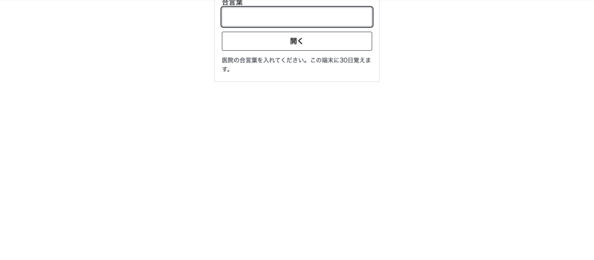
合言葉の画面
1.2 記入者
右上の「記入者」で自分の名前を選んでください。記入者を選んでいないと、帳簿に書く・訂正する・発注を作ることはできません（だれが書いたかを帳簿に残すためです）。
2. 全体の流れ
2.1 麻薬の1つの流れ
発注「発注」で発注の紙を作り、卸へ FAX（→ 6）
↓
受け入れ届いたら、品目の帳簿に「受入」（譲渡証の番号・製品番号）。麻薬譲受証を印刷して卸へ（→ 4・6）
↓
麻酔カルテで使う → 「下書き」に出る麻酔カルテで投与した麻薬が、まだ書いていない施用として並びます（→ 5）
↓
施用を書く払い出した数（アンプル・枚）と、残液を捨てたら量（mL）と立会者（→ 4）
↓
在庫確認ときどき現品を数えて書く。帳簿の残と合わないときは、わけを書く（→ 4）
↓
年間届（毎年 10月1日〜11月30日）数字は帳簿から自動。都の様式の紙に刷って出す（→ 7）
2.2 画面の全体像
| 画面（上のメニュー） | すること |
|---|
| 品目 | 品目の一覧と帳簿の残・品目を作る・施設の形（→ 3）。品名を押すとその帳簿（→ 4） |
| 下書き | 麻酔カルテで使って、まだ帳簿に書いていない麻薬（→ 5） |
| 発注 | 発注の紙・FAX・麻薬譲受証・卸の設定（→ 6） |
| 年間届 | 1年分の数字と、届の紙（→ 7）。提出の時期は赤い点とお知らせが出ます |
| ここが不便 | 使いにくい所を送る（→ 8） |
3. 品目の一覧
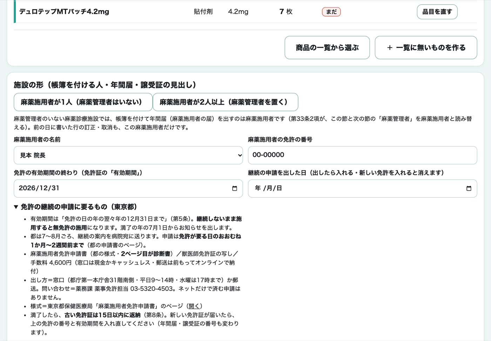
品目の一覧（画面は見本です）
- 帳簿は品名・剤型・濃度ごとに1冊です。帳簿の残と最後の在庫確認（一致・合わない）が並びます。
- 新しい麻薬を扱うときは「商品の一覧から選ぶ」（国内の麻薬の商品の一覧から選ぶと、品名・剤型・規格が入ります）。一覧に無いときは「一覧に無いものを作る」。
- 「品目を直す」：品名・単位のほか、麻酔カルテの薬の名前（下書きに出すための名前）と薬剤マスタの成分を結べます。
- 下の「施設の形」：当院は麻薬施用者が1人（麻薬管理者はいない）の形です。免許の番号・業務所の名称と所在地は、年間届と譲受証に使われます。
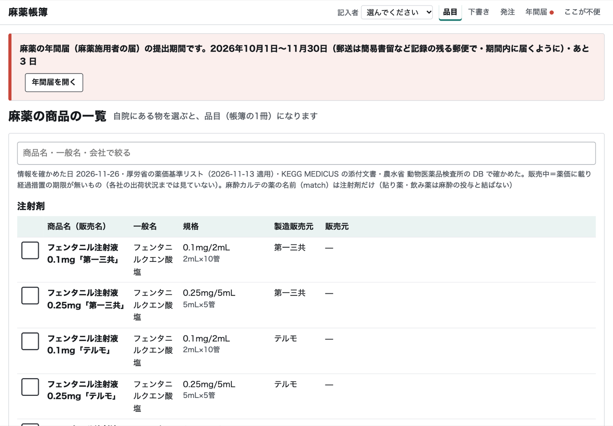
商品の一覧から選ぶ
3.1 免許の有効期間のお知らせ
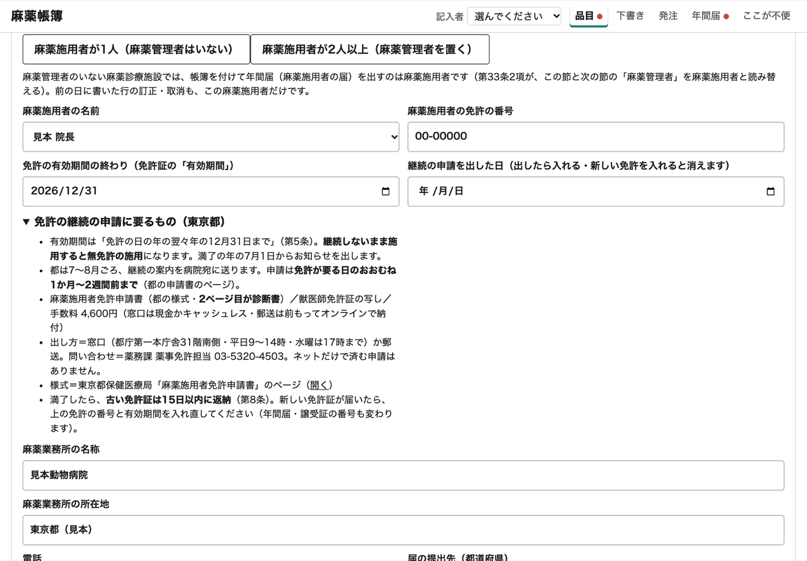
施設の形の「免許の有効期間」と、継続の申請に要るもの（画面は見本です）
- 麻薬施用者の免許は「免許の日の年の翌々年の12月31日まで」です（法 第5条）。継続しないまま施用すると無免許の施用になります。
- 「施設の形」に免許の有効期間の終わりを入れておくと、満了の年の7月1日から画面の上にお知らせが出ます（あと45日を切ると強いお知らせ・メニューの「品目」に赤い点）。
- 継続の申請を出したら「継続の申請を出した日」を入れると、お知らせが穏やかになります。新しい免許証が届いたら、免許の番号と有効期間を入れ直すとお知らせが消えます。
- 「免許の継続の申請に要るもの」を開くと、東京都の申請書・診断書・手数料・出し方・古い免許証の返納（満了から15日以内）が見られます。申請そのものは都の窓口か郵送です（アプリからは出せません）。
4. 品目の帳簿（書く・訂正）
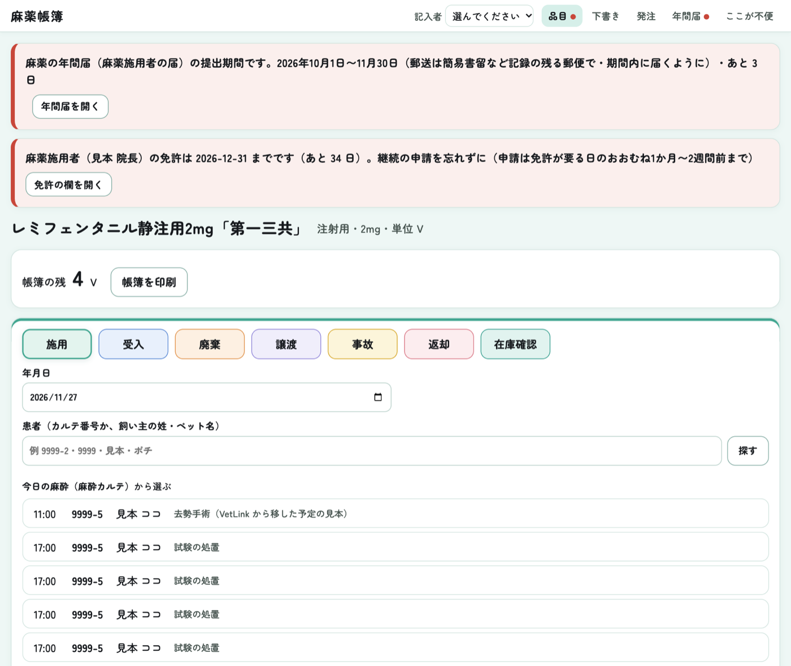
帳簿に書く（画面は見本の患者です）
4.1 帳簿に書く
- 上のボタンで種類を選ぶ：施用・受入・廃棄・譲渡・事故・返却・在庫確認。
- 年月日を確かめる。
- 種類ごとの欄を入れる：
- 施用：患者（カルテ番号か、飼い主の姓・ペット名で「探す」／今日の麻酔・今日の予約から選ぶ）・数量・残液を捨てたら量（mL）と立会者。
- 受入：譲渡人（卸）・譲渡証の番号・製品番号・到着した日。
- 廃棄：立会者が要ります。
- 在庫確認：数えた現品の数。帳簿の残と合わないときは、わけを書きます。
- 「帳簿に書く」。
残がマイナスになる払い出しは書けません。注射の施用残を捨てたときは、立会者を必ず入れてください。
4.2 訂正・取消
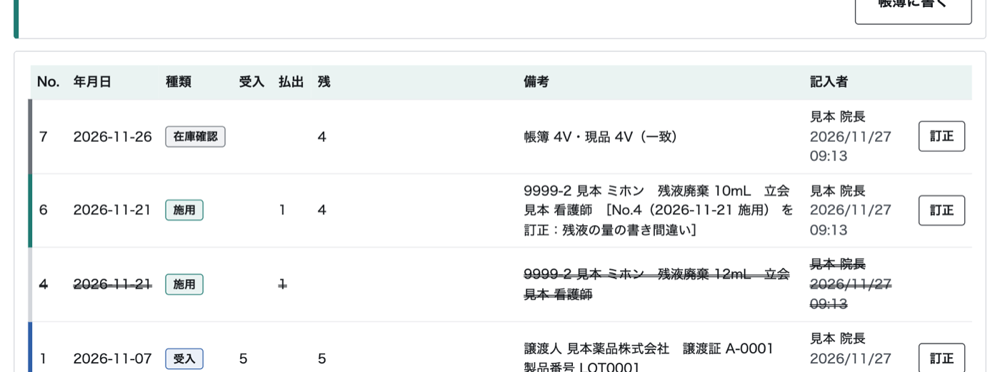
訂正した行は二重線で残ります
- 書いた行は消せません。間違えたら、その行の「訂正」から正しい内容と訂正の理由を入れます。前の行は二重線で残り、新しい行に「No.○ を訂正：理由」が付きます。
- その日のうちは書いた人が直せます。前の日に書いた行は、麻薬施用者（院長）だけが訂正・取消できます。
- 「帳簿を印刷」で紙の帳簿（A4）を出せます。立入検査のときに見せられるよう、ときどき印刷して1か所にまとめてください。
5. 下書き（麻酔カルテから）
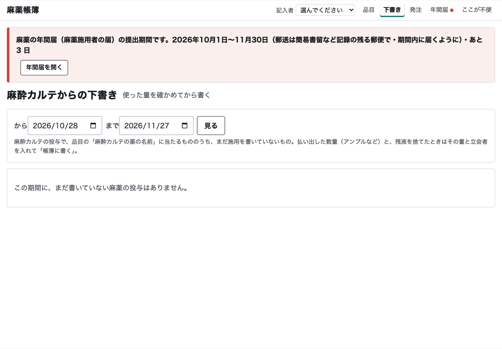
麻酔カルテからの下書き（この見本では、まだ書いていない投与はありません）
- 麻酔カルテで投与した薬のうち、品目の「麻酔カルテの薬の名前」（または薬剤マスタの成分）に当たり、まだ施用を書いていないものが並びます。
- 払い出した数（アンプルなど）と、残液を捨てたときはその量と立会者を入れて「帳簿に書く」。
- 貼り薬（デュロテップMTパッチ）は麻酔カルテの注射と結びません。施用は帳簿から書いてください。
6. 発注・FAX・麻薬譲受証
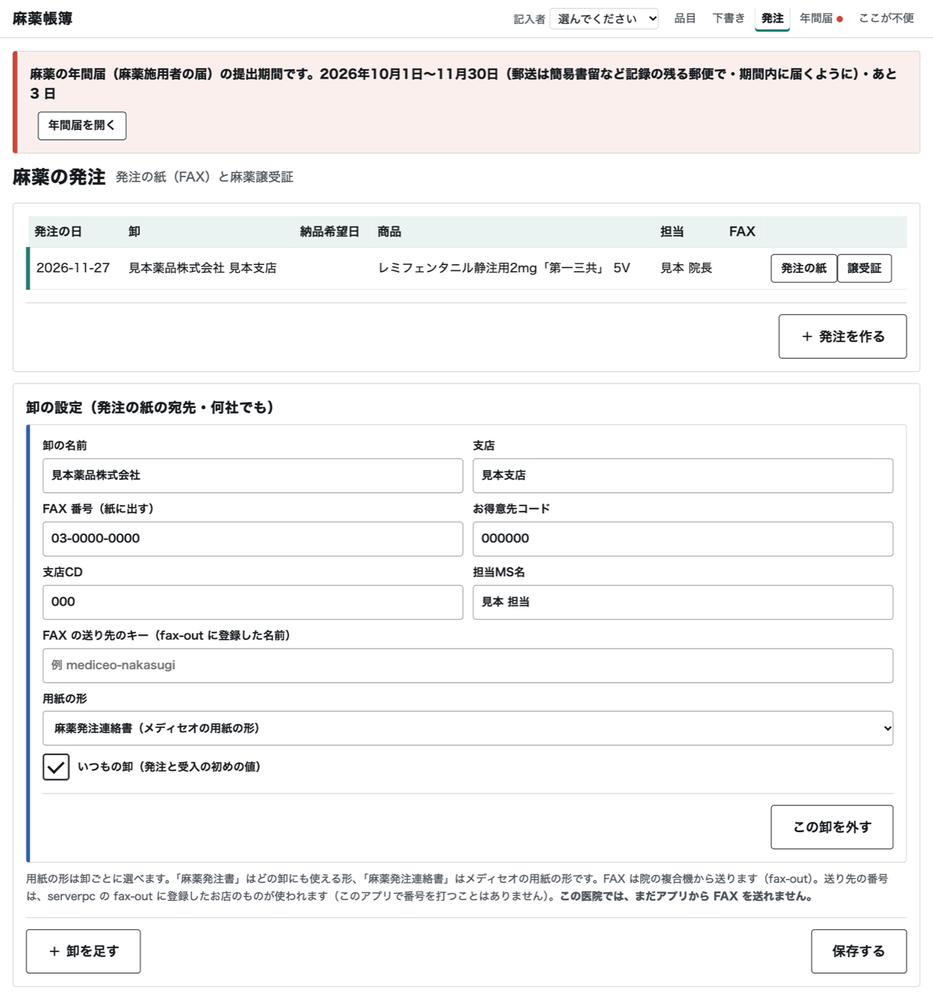
発注の一覧と卸の設定（画面は見本の卸です）
6.1 発注の紙を作って FAX で送る
- 「＋ 発注を作る」で、商品と数量・納品希望日を入れて保存（1枚に5つまで）。
- 発注の一覧の「発注の紙」で紙を確かめる。
- 「FAX で送る（卸の名前）」を押し、もう一度押すと複合機から送ります。
- 状態に「複合機が送信済みと返答」と出ます。これは複合機が送ったという意味で、相手に届いたかまでは分かりません。初めての発注や急ぎのときは、卸に電話で確かめてください。
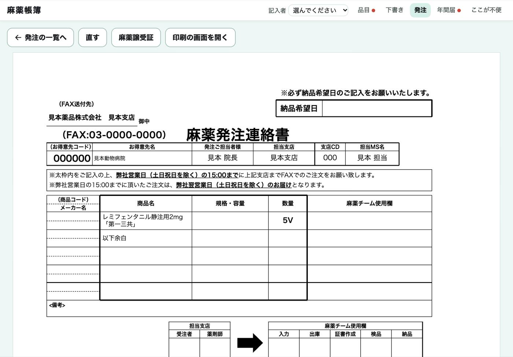
麻薬発注連絡書（卸の用紙の形）
6.2 麻薬譲受証
発注の一覧の「譲受証」で麻薬譲受証を印刷できます。使わない行には斜線が入ります。
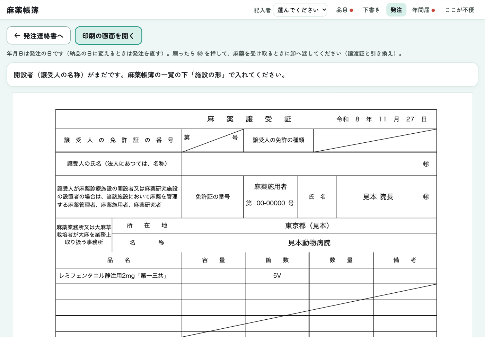
麻薬譲受証（画面は見本です）
6.3 卸の設定
卸は何社でも足せます。用紙の形（どの卸にも使える「麻薬発注書」／「麻薬発注連絡書」）と、いつもの卸を選べます。FAX の送り先の番号は院の FAX の仕組みに登録したものが使われ、このアプリで番号を打つことはありません。
7. 年間届
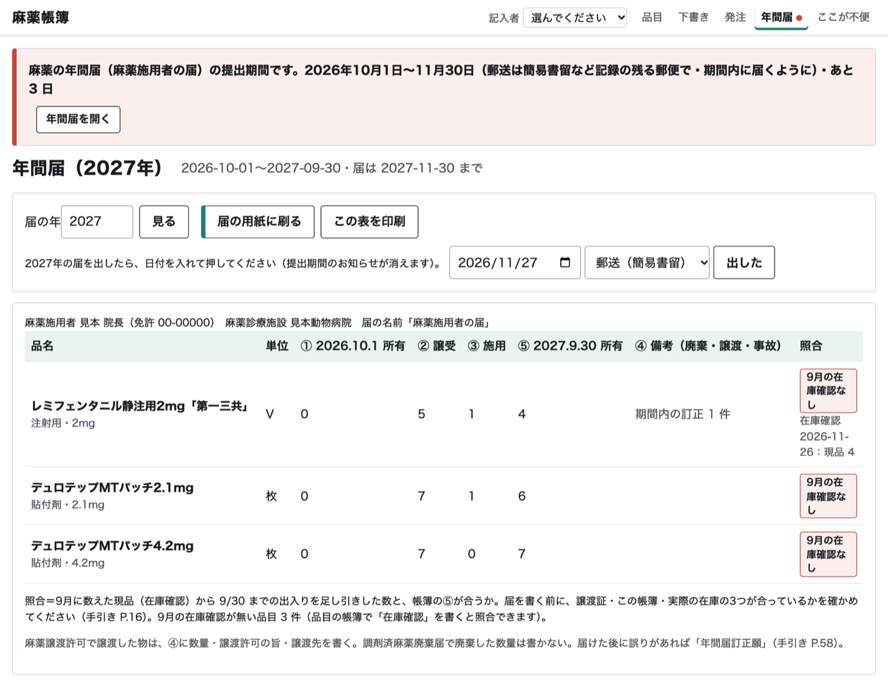
年間届（画面は見本です）
- 麻薬の年間届は毎年 10月1日〜11月30日に、前の年の10月1日〜その年の9月30日の分を東京都に出します。この時期になると、上に赤いお知らせと、メニューの「年間届」に赤い点が出ます。
- ①10/1 の所有・②譲受・③施用・⑤9/30 の所有は帳簿から自動で出ます。届を書く前に、譲渡証・この帳簿・実際の在庫の3つが合っているか確かめてください。
- その期間に麻薬が無かった年も、「所有なし」で届が要ります。
- 出したら、日付と出し方を入れて「出した」を押すと、その年のお知らせが消えます。
7.1 届の紙を刷って出す
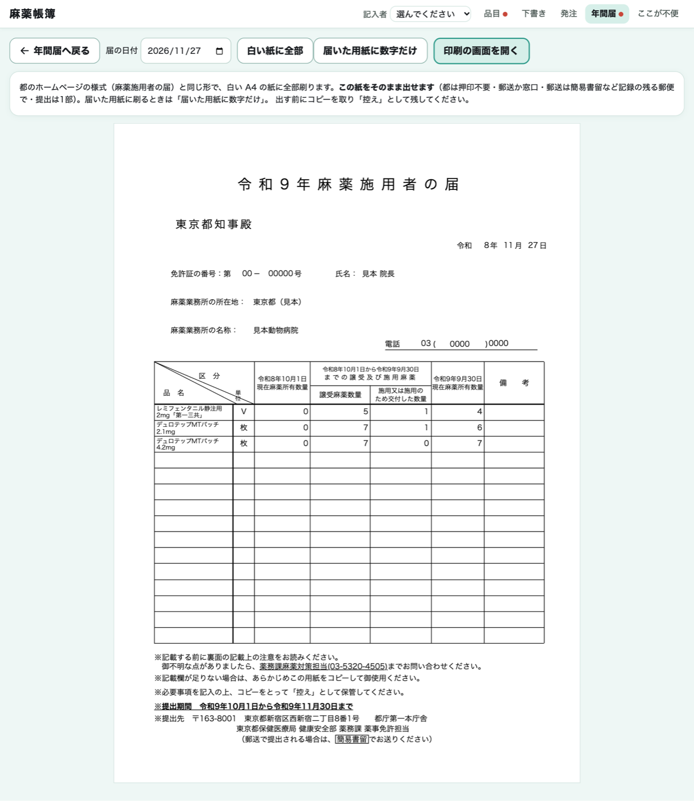
年間届の紙（都のホームページの様式と同じ形・画面は見本です）
- 「届の用紙に刷る」→ 届の日付を入れる →「白い紙に全部」→「印刷の画面を開く」。
- 都のホームページの様式（施用者の届）と同じ形で、白い A4 の紙に刷れます。この紙をそのまま出せます（押印は要りません）。
- 出す前にコピーを取り「控え」にしてください。
- 出し方：郵送（簡易書留など記録の残る郵便）か窓口。宛先は紙の下に刷ってあります。
東京都の年間届は、いまは郵送か窓口だけです（ネットでの提出はありません）。都から届いた用紙に数字だけ刷りたいときは「届いた用紙に数字だけ」。
8. 「ここが不便」を送る
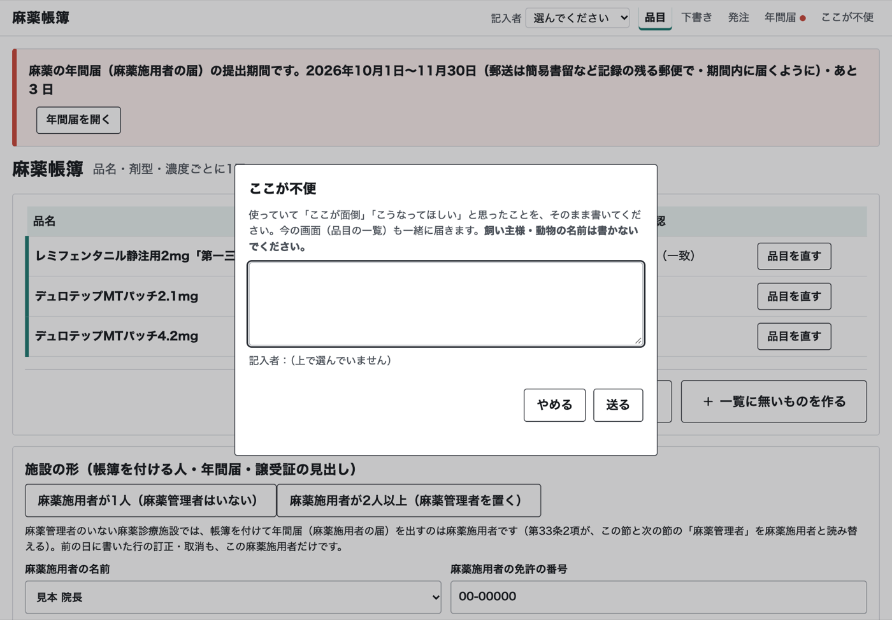
「ここが不便」の入力（画面は見本です）
- 右上の「ここが不便」から、使いにくい所をそのまま書いて「送る」。今の画面の名前が一緒に届きます。
- 飼い主様・動物の名前は書かないでください。
- 下に、これまでに届いているものと状態（受付・作業中・反映済み など）が出ます。直ったら送った方へ LINE WORKS でお知らせします。
9. よくある質問・困ったとき
| こんなとき | こうしてください |
|---|
| 合言葉を聞かれた | 麻酔カルテと同じ合言葉です。30日たつと、もう一度聞かれます。 |
| 書こうとすると「記入者を選んでから」と出る | 右上の「記入者」で自分の名前を選んでください。 |
| 前の日の行を直せない | 前の日に書いた行の訂正・取消は、麻薬施用者（院長）だけです。院長に伝えてください。 |
| 麻酔カルテで使ったのに下書きに出ない | その品目の「品目を直す」で、麻酔カルテの薬の名前が入っているか確かめてください。貼り薬は下書きに出ません。 |
| 在庫確認で数が合わない | わけを書いて残してください。なくなった・壊れた・盗まれた疑いのときは、すぐ院長へ（事故の届が要ります）。 |
| FAX が届いたか分からない | アプリの「送信済み」は複合機が送ったという意味です。卸に電話で確かめるか、複合機の送信履歴を見てください。 |
| 「免許の有効期間が入っていません」と出る | 品目の一覧の下の「施設の形」に、免許証の「有効期間」の終わり（12月31日）を入れて保存してください（→ 3.1）。 |
| 使いにくい・こうしてほしい | 右上の「ここが不便」から送ってください（→ 8）。 |
⚠ 患者情報の取り扱い：施用の行には患者の番号と名前が出ます。院外で画面を開いたまま席を離れない・画面の写真をSNS等に載せないでください。（このガイドの画像はすべて見本のデータで、実在の患者情報は含みません）